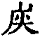

嘉興大藏經 第29冊
No.B238 聚雲吹萬真禪師語錄 (3卷)
【明 廣真說 燈來編】
第 3 卷
聚雲吹萬真禪師語錄卷下
入堂
入堂參話頭一節迺古人為後學開底方便法門秖因心意識三種雜毒難除與他一個硬石頭磊在胸中方始除去一切絡索若把著不變何異無病服藥藥反成病久久倒作個死煞東西或有工夫稍起者但見參時有不參時則無靜時有動時則無醒時有睡著則無說時有不說則無縱少有見處總在黑山下卜度將來何曾十分透脫若是個力量漢鐵起脊梁放下身命千咀萬嚼把這硬石頭百咂碎依舊是個現現成成底便爾開眼眼上有話頭側耳耳上有話頭縮鼻鼻上有話頭動口口上有話頭伸手手上有話頭舉足足上有話頭自從得入黃金殿四壁光明遍十方。
入堂舉長沙云我若一向舉揚宗教法堂前草生一丈聚雲不然我若一向不舉揚宗教法堂前草生一丈舉也不得不舉也不得作麼生得法堂前草不生去良久云田中蛙鼓叫嶺上野猿啼。
入堂大凡參究這個一切皆有悟處有行持禁戒向衣缽邊得悟者有看讀經文在語言中得悟者有入眾作務觸物遇緣得悟者看得破時處處菩提路門門古佛家不勞重進步海角與天涯。
入室
問僧喚作竹篦則觸不喚作竹篦則背首山念唱導大慧杲依樣畫葫聚雲又作麼生僧云鐵菱角笑殺水烏龜師便打。
僧入師以拄杖畫○相云此是一字於左邊畫○相云此是二字於右邊畫○相云此是三字昨日說與謝三郎今朝說與新闍黎僧云洗面摸著鼻孔聻師云你鼻孔在甚麼處。
問僧無字作麼生參僧彈指師打云莫道無語好僧云還許學人問話也無師打云莫道有語好僧云學人不會師復打。
問書記會寫不怕筆頭樁記云不打這鼓笛師打云不打這鼓笛記云無手人又作麼生師打云不打這鼓笛記云草裡漢師打云不打這鼓笛。
僧入師云我不問你僧云為何不問師便打僧大叫師連棒打出僧入師云適纔有個野狐被老僧打出去了僧云某是新產獅子兒師云我知道你僧云和尚也須骨出師云汝不是獅子兒。
勘辨
有行腳僧慕朝海師云海雖闊大卻是川水流去底僧云未審川水在甚麼處流來師喚侍者云盤中菜著些醋好。
侍者為師設飯床太遠師自撤近前者云君子離臺三尺師云衲僧聻者無語師代云近也喫遠也喫又云和尚年尊將就些好。
師住金陵觀音庵朝宗來參師云甚處來宗云天童師云天童近日何如宗云大家在這裡師云不要說脫空話宗云師何不往天童去師喝宗云落在甚麼處師便打。
劉墨仙居士持聖恩問道錄見訪與師坐間論及楊岐九峰之語師云正恁麼時楊岐在前九峰在前士良久問和尚又作麼生師便喝士云這一喝是前是後師翹一足士禮拜。
一僧來參師問甚處來僧云金粟來師云如何是金粟得力句僧云白雲覆青山青山不露頂師云此是意識家語如何是得力句僧云虛空粉碎大地平沉師云此是義學家語如何是得力句僧無語師云汝不曾從金粟來。
晚課次師問一僧云自己是僧又皈依個甚麼僧云不妨自皈師云語不離窠臼安能出蓋纏僧云從來不出門師云笨驢推磨。
勘初機語西來大意直指單傳且道傳個甚麼。
心佛與眾生是三無差別為甚麼凡夫不會。
水牯牛未降猢猻子未死衣缽放在甚麼處。
勘諸方學人語可中有一物牙如金爪口似血盆一晝夜吞卻八萬四千恒沙諸佛未審過在甚麼處。
六根俱有功德為甚麼祖師多唱鼻孔。
問答
僧問薰風自南來殿閣生微涼意旨如何師吹一口。
僧問世尊道天上天下唯吾獨尊為甚麼雲門要打殺師云路見不平傍人剷削。
一僧作禮云請和尚上雪山去師云我纔在雪山來僧云某甲在山下不曾得見師喚侍者一聲。
答漢月禪師四問
正睡著時與死了燒了心之與性牙齒打不著須向這裡希取大用始得如何是此處底大用。
答云折腳鐺裡淡黃虀。
答云纔過驢胎又鑽馬腹。
近世野狐都說心性禪不知姓張姓李請禪師代答一轉語貴圖天下衲僧脫卻腥臭。
問漢月禪師四問
古人道八角磨盤空裡走不知是空走磨磨走空。
頌古
世尊陞座。
舉一不得舉二。
趙州勘婆。
青州布衫。
須彌山。
一光東照。
南遇唱和。
雜述
示監院偈
示副寺
示典座
示知客
示雜辦
示侍者
經行
看經
坐禪
問答

看錄
法身
麥地牛生草沙河馬捉魚紅爐冰種火梅花夜讀書
詩
毛詩擬作(有序)
雲之南其望匪思嗟嗟我榆誰浣牽中衣雲之南寄聲維長我儂異邦厥志履清涼雲之南疏竹蔭清古木瑤琴現彼物中真雲之南竺兮有蕸我慈脫去苞彼德中花
右毛詩四章章四句此詩乃追母氏而作也家慈自山野出俗後厥志法門六時危坐心佛相憶者九年初小病七日前先計某日我當西去是日斂衣踞坐於庭左右將信將疑時至果脫然念佛而逝親友聞已自外以念佛敲魚入庭家慈聞佛聲再覺與眾同音念誦一餉告別長往山野聆之作是詩以自慶。
讀花神三妙記(樂府)
綠霜塗柳翠朱露染桃紅月娥素羽寒兔逼妒殺英才花雨中君不見玉簫羅漢撲彤墀白鳳香囊苦離離又不見徒死苾芻細腰舞挑目招心住江渚可憐如劍復如蛇螯我靈根戕我家只須惡慧勤三作不消景雲長聯賦
秋日田侍御見召賦得君馬黃辭之(古樂府)
君馬黃恒引駕假乘之難酬價秋日馳之苦路斜須惜當年產渥澍況來抖擻不宜馳追風逐電何用之寧負竹樓神鳳操未許輕折楊柳枝
善哉行(樂府)
誰將天地號紅爐百昌因之以榮枯英豪束卻臭皮袋透得幾人是丈夫蚊蜩殼脫寒枝棄蜂蝶神化壤坌無明明雲路弗施為撲火吐絲何太愚楊雄投閣徒已矣介子焚身空悲爾不識西華老神仙天子呼之猶未起幸來早覺華胥夢始知妙湛緣影弄可憐采石投江魚可惜玉京傳白鳳舉眼北邙籠冷煙那能得入桃園洞雖曰把酒且當歌怎奈人生能幾何王子七日杳世路波斯兩次睹恒河碧眼黃頭原卓越余已追之可長活指上拈來四句真大都一字皆隱括徙倚出頭解虎錫熬煎爐內降龍缽非為自私入雲深窮則獨善兼則達廣成曾示我無搖四體鬚髮任蕭條中含一物先天地年年不逐四時凋四時凋兮余不老個裡蒲團秋月皎這回踏遍海潮音隱隱露出珊瑚寶
君子行(樂府)
荊南之水祖岷峨宛轉波揚壘疊多黃河之水自長天哮濤流水不勝玄從來枉直人間事過者為之口諓諓卜居楚子不須問碧虛湫盤獨是然瓠巴鼓瑟遊魚戲伯牙操琴仰馬視樵父不等爛柯回世態怎知雙眼淚爝火不息訪鷦鷯日出而作意飄鷂唐虞垂衣天下治偏使我心何忉忉方今太是氣淤塞較之雄伯尤污黷投醪江飲不再來分飯剖餐誰追復腐鼠癡鳶滿市場石沉稿立羞干祿豈如昌雨覓黃花豈如乘興看修竹黃花修竹固悠悠白牯黧奴可解求了知擊角愈增醜罷讀離騷短髮遊潮吟島嶽三洲應澗影星河一月秋幾回白雲深處坐幾度百花叢裡過請循其本卻歸家栩栩蝴蝶些兒個羊裘莫說把絲綸采薇休道耽饑餓豪傑古今長夜中街頭布袋輕笑破
除夕賦得將進酒似田侍御(樂府)
去年除夕荊南謔今年除夕臨江樂雪花撲亂梅花飛清香點就壺中酪何須麴檗煩儀狄竹葉寒光明的皪化母展動三陽開春風即送人日來閑中且聽八仙歌長安李白信奇哉
君馬黃(感賦)
陟岡之馬玄且黃白璧月題鸞鏘鏘介睨[翹-羽+喬]齧鞭策絕骭氣騰躍苦王良可憐北冀生馬多肆無天廄怎奈何鹽車有恨徒惆悵下乘液髮忍蹉跎我欲相忘索真馬皮毛外擢踏天下千里昂昂大塊中七聖還來參牧者
行路難
林之壑兮山之石手之策兮足之屐戰兢一步一垂涎此去天臺還幾尺白雲雖近御風遲曳尾徒勞把釣癡只今故向煙塵裡豈將黃葉賺啼兒世道草萊秋禁度轉眼嘉平霜雪吐驅馳若未徹骨寒梅花孰肯枝頭露行路難行路難路難不作燕人慕
感賦
崑山之玉原無色幽谷之芝不漏香嗟哉世態鮮青眼觸目黃金未見光洛溟那識靈龍臥蒼梧誰知彩鳳藏呵呵雲徑歸來也門巷是兮人境狂
代作陳郡侯德政樂府辭(日重光行)
附耳珮瑛何其象點然流蘇未作光民無舉目山無色到處鯨鯢波浪狂蒼蒼何幸憐孔邇重光重輪特地起蔥鬱文華絳帳開歌頌歡聲芾棠止三接三錫頻來頒爭守無妨遮閭里君不見蒞政唯需一杯水
遊岑公洞
未到岑公洞先讀岑公碑字字稱金液行行讚石芝未識岑公知不知卻令古島暗攢眉寧使人將五恨推誰肯犬吠落人嗤君不見踏遍歌聲何所為
春日策杖巴臺步杜甫贈王郎司直韻(短歌行)
不得抖擻不若匏瓠一繫哉木葉乾殼乘之豈謂風而偕策杖柳堤碧煙舞過橋澗底白雲開鳴玉菴前淺翠來影入松關林鳥度聲傳江干湍水怒古道夾柏扇飛紅桃花凋落人不顧唯有夜月歡相慕
窗隙吟
舉目看前窗前窗綠影竹轉眼看左窗左窗樹影綠相敲相舞葉搖風為羽為商聽不足聽不足一輪月下瑤池窟
宿萬家菴有感
摶風不羨榆枋志嘖嘖榆枋卻有評誰識山河無關楗到處幽幽似白雲憶昔素王居陳蔡芝蘭芬芳何所礙皎乎日月煙雨中寬兮天地人情外予經此際亦蹉跎且無子路說窮態
辭
布施
八識正幽幽風停海靜浪濤休通明殿孤光映十洲森羅萬象色影咸收檀度原非著相求欲到頭心珠燦爛逆水駕慈舟
持戒
河漢鎖空霄月落寒潭斗柄高往來的水面細風飄雪謝冰消清流獨繞尸羅塵垢絕纖毫把斯標金章玉篆青華臺上遶
忍辱
斧劈太虛空螢燄難燒海映紅歌利王卻是古家風寸刀斷幻四相無蹤個裡知音大覺同臭皮籠煙波散盡霹靂滿天轟
精進
一步一蓮花門門古佛信無差琉璃地現出老袈裟法席冤家從茲脫灑太平誰道將軍大劫如沙不離一息超越過天涯
禪定
鐵脊古頭陀嚼碎寒空遍大羅玄元始化作須彌座雲舞風歌龍潛虎臥泥洹不假修持多任蹉跎玄黃消散光陰孰礙我
智慧
慧日獨高懸一寸靈心碧落天十法界到此絕塵煙事理同圓心法雙玄摩尼五色因緣現論當然朝朝行道夜夜抱佛眠
行
散步優游穿徑騎牛尋逝水魚戲莊周更奧窔處萬籟歌謳聽谷聲雅鳥聲趣竹聲幽
住
卷室茆庵自在幽閒論羶逐與我無干朝參麋鹿暮侶猱猿但嚼黃精啖苦菜掬清瀾
坐
竹椅蒲團燕息悠然追二氣固入泥洹良久渾化無地無天到鴻蒙內威音外太虛前
臥
石塌蘆編和衣共眠一鼾了無盡長天雙林樹下月朗星懸任泥牛吼木馬唱金虎言
吹萬大師塔銘
州郊北有三目山為郡之項脈山龍小歇蜿結虯盤中創聚雲禪林迺闔郡縉紳士庶所就其謀始而圖成者則本郡侍御高公與家大人實主之(國)亦少與有力焉蓋以居吹萬大師也大師諱廣真僰道宜賓人俗姓李父祖三世為婆羅門師生有異徵詳載行錄幼而業儒長而事佛得法於月明聯池老人池嗣鐵牛遠遠嗣荊山寶寶嗣無念有有嗣二仰欽欽嗣小庵密密嗣一言顯顯嗣筏渡慈慈嗣苦口益益嗣淨慈明明嗣鼓山永永嗣西禪需需嗣大慧杲歷溯源流師固大慧十四世孫也大慧下十尊宿遞有機緣語錄流傳至鐵牛月明但述相見之語付囑之偈大師崛起而中興之匪第光顯徑山鼎新臨濟而且扶宗拯弊身體力行師蓋千古法門之功臣也何以言之當師之時禪風衰晚師則慨然有從先之志套板時腔竊恥而不為是以涉海入吳穿閩過粵一帶煙霞物色盡在目中大都墨浪筆花競浮場社無有可其意者自湖東開法後便爾返棹錦江家君挽留卓錫樹幟雲根年來開堂眾至數千指師之教人每以慈悲真實忍辱為訓不稽之言不出諸口隨俗之事不行諸身凡其作則立規者皆準先正之典型而不以師心自用遐哉其不可及也嗚呼宗門割裂鬥諍成風家創一言人標一解硬節擔板之病中於膏肓師體醫王之慈痛為針灸故有病在一棒一喝以為直捷者師則救之以宗旨有病在習見習聞以為沿流者師則救之以悟明有病在承虛接響以為解會者師則救之以參證至於冒名祖位賣弄虛聲鄙棄律儀肆行誑誕種種疚患師無不看病用方諦觀普說小參總皆對症藥石(國)不肖雖不能窺其一斑挹其餘緒良由北面於師未嘗不從揮麈豎拂間識婆心而奉法旨也師殆不可及者哉師正錄十卷廣錄近百卷已屬水部尚書郎月崖熊公捐俸刊刻月崖諱汝學豫章人鐵公法子師之孫也刊成而師之法雨澍矣沐其澤者靡不沾其潤覺片言隻字皆有師之面目存焉則皆有師之鴻慈寓焉具眼者那肯錯過若夫端嚴相好和氣春風瞻師之容者咸生懽喜接師之範者極其讚嘆則又師之威儀盛德感召乎人者為自然爾嗚呼今之沽源流而付衣缽者濫矣師獨不輕於授受必勘其行履見地垂範人天者而後許之如鐵壁慧機禪師則本川營山人三目慧芝禪師則吾郡劉氏子鐵眉三巴掌慧麗禪師則北直趙州柏鄉人之三公者皆師入室弟子也其餘得師之法或遠引山林或垂鉤湖海者未可盡悉此則克振家聲丕承基業(國)之所目擊而心折者烏容不並述以紀其傳哉師住世五十八年開堂五處偶示疾山神悲號樹木摧折病中嘗歌唱自娛提持學侶如舊三月前謂侍者曰我臨終須大喝而去於崇禎十二年己卯七月三十日索筆書偈云朝打三千暮打八百要會聚雲眉毛出血擲筆危坐不語至午果大喝兩聲脫去茶毘煙至松羃結為五彩遍地荷香襲人起骨得黃金鎖子三莖當門二齒變為紫色五色舍利三百餘顆平都地藏寺迎十二顆建塔餘皆塔於本寺三目山之陽弟子(華國)謹拜首颺言而為之銘曰。
碧眼西來 不立文字 五葉一花
垂蔭奕世 徑山大慧 為臨濟宗
諡稱普覺 法海神龍 遞傳而下
迄師吹萬 中興祖道 光昭雲漢
大哉師模 罕與為儔 高豎三目
卑彼陵丘 自號頭陀 冠曰如醉
振鐸聚雲 提醒聾聵 當師之時
滿地狂禪 譬如獵馬 師痛加鞭
俾蹄嚙者 服厥銜轡 載馳載驅
知進知退 扶衰救弊 師亦孔艱
良藥苦口 為人所難 資學既優
且廣識量 俯視叢林 而踞其上
屏山落落 浯水悠悠 法雲常布
法雨常流 瞻師浮圖 儀型猶在
允矣宗猷 古今攸賴